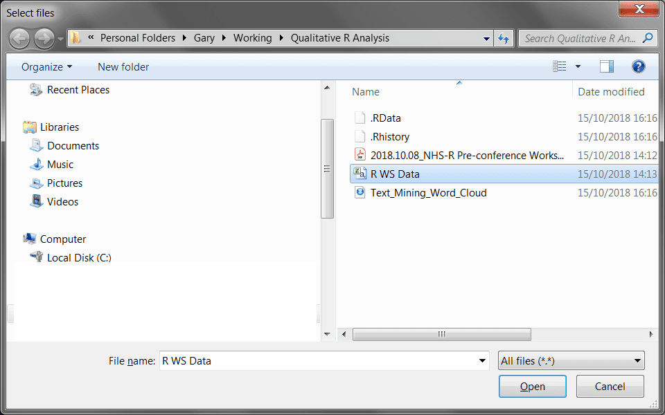
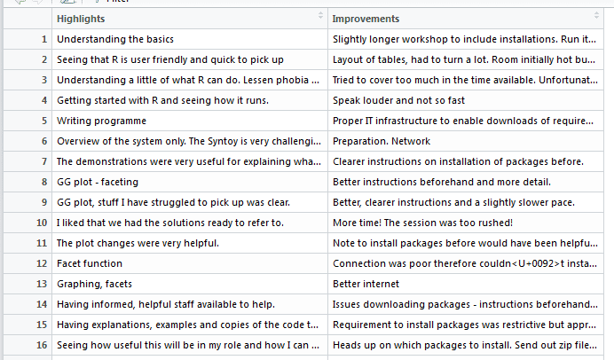
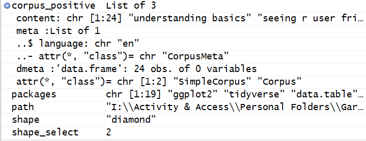
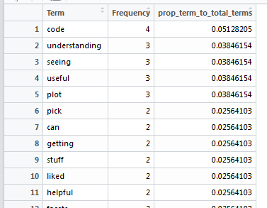

install_or_load_pack <- function(pack) {
create.pkg <- pack[!(pack %in% installed.packages()[, "Package"])]
if (length(create.pkg)) {
install.packages(create.pkg, dependencies = TRUE)
}
sapply(pack, require, character.only = TRUE)
}
packages <- c(
"ggplot2", "tidyverse", "data.table", "wordcloud", "tm", "wordcloud2",
"scales", "tidytext", "devtools", "twitteR", "caret", "magrittr", "RColorBrewer", "tidytext", "ggdendro",
"tidyr", "topicmodels", "SnowballC", "gtools"
)
install_or_load_pack(packages)Analysing the pre-conference workshop sentiments
Loading in the required packages:
This function was previously covered in blog post: https://nhsrcommunity.com/blog/a-simple-function-to-install-and-load-packages-in-r/.
Here I specify that I want to load the main packages for dealing with sentiment and discourse analysis in R. Libraries such as {tm}, {wordcloud} and {wordcloud2} are loaded for working with this type of data.
Choosing the file to import
The file we have to import is a prepared csv file and instead of hard coding the path to load the file from I simply use:
path <- choose.files()
This is a special function which allows you to open a dialog UI from R:
From this dialog I select the csv file I want to be imported. Once I have selected the csv and hit open, the path variable will be filled with the location of the file to work with.
Creating the R Data Frame
To create the data frame I can now pass the variable path to the read_csv() command:
workshop_sentiment <- read_csv(path, col_names = T)This will read the textual data from the workshops in to a data frame with 2 columns. The first relates to what the attendees enjoyed about the workshop and the second relates to improvements that can be made:

Separate the master data frame
The master data frame now needs to be separated into two separate data frames, as text analysis requires one column with the number of rows for each sentence, as demonstrated. Here I use {magrittr} to divide this into two new data frames:
ws_highlights <- workshop_sentiment %>%
.[, 1]
# Copy for improvements
ws_improvements <- workshop_sentiment %>%
.[, 2]The ws_highlights data frame uses the first column and the ws_improvements data frame uses the second.
Function to create textual corpus
As I want to replicate this for highlights and improvements – I have created a function that could be replicated with any text analysis to create what is known as a text corpus (see: https://cran.r-project.org/web/packages/tm/vignettes/tm.pdf) this creates a series of documents, in our case sentences.
This function allows you to pass any data frame to the function and creates a corpus for each data frame you pass to the function. The data frame would be passed to the x parameter. The VectorSource() function creates an element for each part of the corpus.
Create Corpus for Highlights and Improvements data frame
Now the function has been created, I can simply pass the two separate data frames I created before to create two corpuses:
corpus_positive <- corpus_tm(ws_highlights$Highlights)
corpus_improvements <- corpus_tm(ws_improvements$Improvements)The code block above shows that I create a corpus for the positive (highlights) data frame and an improvements corpus. This will display as hereunder in your environment:

##Function to clean data in the corpus
The most common cleaning task of working with text data is to remove things like punctuation, common English words, and so on This is something I have to repeat multiple times when dealing with discourse analysis:
clean_corpus <- function(corpus_to_use) {
library(magrittr)
library(tm)
corpus_to_use %>%
tm_map(removePunctuation) %>%
tm_map(stripWhitespace) %>%
tm_map(content_transformer(function(x) iconv(x, to = "UTF-8", sub = "byte"))) %>%
tm_map(removeNumbers) %>%
tm_map(removeWords, stopwords("en")) %>%
tm_map(content_transformer(tolower)) %>%
tm_map(removeWords, c("etc", "i.e.", "e.g.", stopwords("english")))
}The parameter here takes the corpus object previously created and uses the corpus passed to:
- Remove punctuation
- Strip out whitespace between each text item, as the VectorSource has stripped out each word from each sentence in the data frame
- Change the underlying formatting of the text to UTF-8
- Remove numbers
- Remove common English word (stop words)
- Change the case to lower case
- Remove a custom vector of words to adjust for things like “e.g.”, “i.e.”, “etc”.
To clean the corpus objects I simply pass the original corpus objects back through this function to perform cleaning:
corpus_positive <- clean_corpus(corpus_positive)
corpus_improvements <- clean_corpus(corpus_improvements)Inspection of one of the data frames confirms that this has successfully been cleaned:
Create TermDocumentMatrix to attain frequent terms
The term document matrix (explained well here: https://www.youtube.com/watch?v=dE10fBCDWQc) can be used with the corpus to identify frequent terms by classification on a matrix. However, more code is needed to do this:
find_freq_terms_fun <- function(corpus_in){
doc_term_mat <- TermDocumentMatrix(corpus_in)
freq_terms <- findFreqTerms(doc_term_mat)[1:max(doc_term_mat$nrow)]
terms_grouped <-
doc_term_mat[freq_terms,] %>%
as.matrix() %>%
rowSums() %>%
data.frame(Term=freq_terms, Frequency = .) %>%
arrange(desc(Frequency)) %>%
mutate(prop_term_to_total_terms=Frequency/nrow(.))
return(data.frame(terms_grouped))
}This function needs explanation. The function uses as a single parameter the corpus that you need to pass in, then a variable is created to create the doc_term_mat which uses the tm TermDocumentMatrix.
Next, I use the findFreqTerms function to iterate from the first entry to the maximum number of rows in the matrix. These are the powerhouses of the function, as they highlight how many times a word has been used in a sentence across all the rows of text.
The terms_grouped variable then slices the term matrix with the frequent terms, this is converted to a matrix, sum of each row are calculated for example the number of times the word appears. Then, a data frame is created of the terms in the function with the headings term and Frequency.
Next, we use the power of {dplyr} to use arrange by the frequency descending and to add a mutated column to the data frame to calculate the proportion of that specific term over all terms. The return(data.frame(terms_group)) then forces R to return the results of the function.
I then pass my data frames (highlights and improvements) to the function I have just created to see if this method works:
positive_freq_terms <- data.frame(find_freq_terms_fun(corpus_positive))
improvement_freq_terms <- data.frame(find_freq_terms_fun(corpus_improvements))These will be built as data frames and can be viewed in R Studio’s Data environment window:

This has worked just as expected. You could now use ggplot2 to produce a bar chart / pareto chart of the terms.
Create a Word Cloud with the {wordcloud2} package
R has a {wordcloud} package that produces relatively nice looking word clouds, but {wordcloud2} surpasses this in terms of visualisation. To use this function is easy now I have the frequent terms data frame – using the highlights data frame this can be implemented by using the below syntax:
wordcloud2(positive_freq_terms[,1:2],
shape="pentagon",
color="random-dark")To use the function I pass the data frame and use the term and frequency fields only to use the visualisation. There are a number of options and these can be accessed by using the help("wordcloud2") function. Here I use the shape and color parameters to set the display of the word cloud:

This can be exported in the viewer window by using the Export function.
This word cloud relates to the pre workshop prior to the conference. I personally thought the NHS-R conference was amazing and I was honoured to have a spot to speak amongst so many other brilliant R users.
R is so versatile – every day is like a school day when you are learning it, but what a journey.
This blog has been edited for NHS-R styles and has been formatted to remove Latin Abbreviations